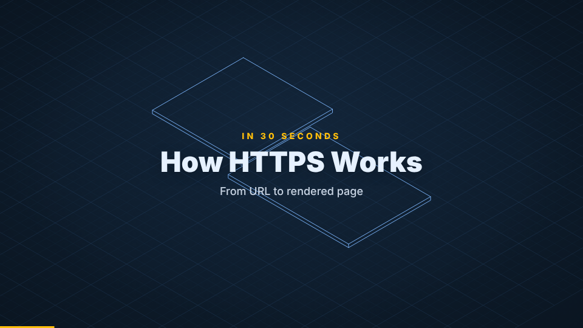
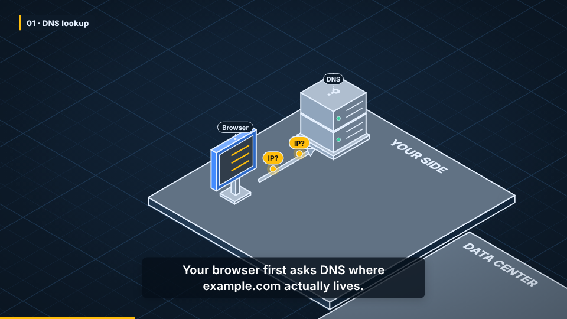
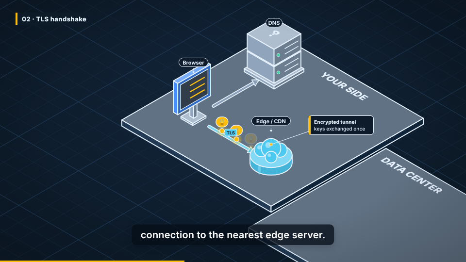
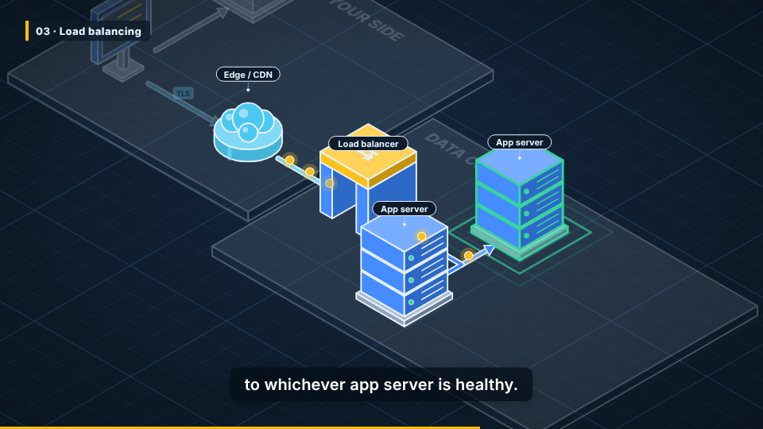
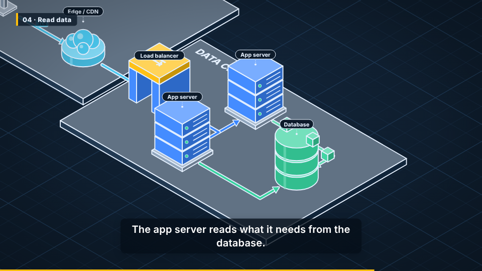
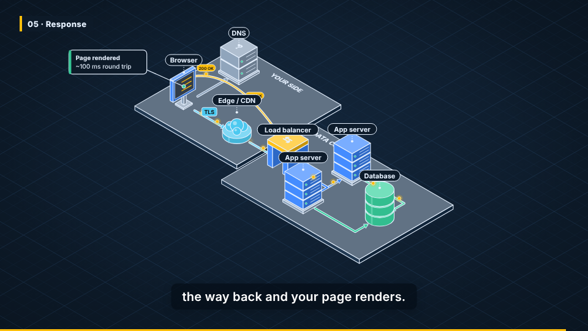

What happens when you open a website
主题 HTTPS request lifecycle · 受众 Junior developers · 语言 en-US · 6 个镜头 · 总时长 0:36.0
调色板 blueprint

S01
0:00.0 – 0:04.0 · 4.0s
How HTTPS Works
🎥 all
trace → zone_client, zone_dc

S02
01 · DNS lookup
0:04.0 – 0:10.0 · 6.0s
Your browser first asks DNS where example.com actually lives.
🎥 browser, dns
assemble → zone_client, zone_dc
build → browser, dns
link → l_dns
flow → l_dns

S03
02 · TLS handshake
0:10.0 – 0:16.0 · 6.0s
Then it opens an encrypted TLS connection to the nearest edge server.
🎥 browser, cdn
build → cdn
link → l_cdn
flow → l_cdn
callout → cdn

S04
03 · Load balancing
0:16.0 – 0:24.0 · 8.0s
A load balancer forwards the request to whichever app server is healthy.
🎥 cdn, lb, app1, app2 · dim
build → lb
build → app1, app2
link → l_lb
link → l_a1, l_a2
flow → l_lb
flow → l_a1
highlight → app1

S05
04 · Read data
0:24.0 – 0:30.0 · 6.0s
The app server reads what it needs from the database.
🎥 app1, app2, db
build → db
link → l_d1, l_d2
flow → l_d1

S06
05 · Response
0:30.0 – 0:36.0 · 6.0s
Finally, the response travels all the way back and your page renders.
🎥 all
link → l_back
flow → l_back
flow → l_cdn, l_lb, l_a1, l_d1
callout → browser